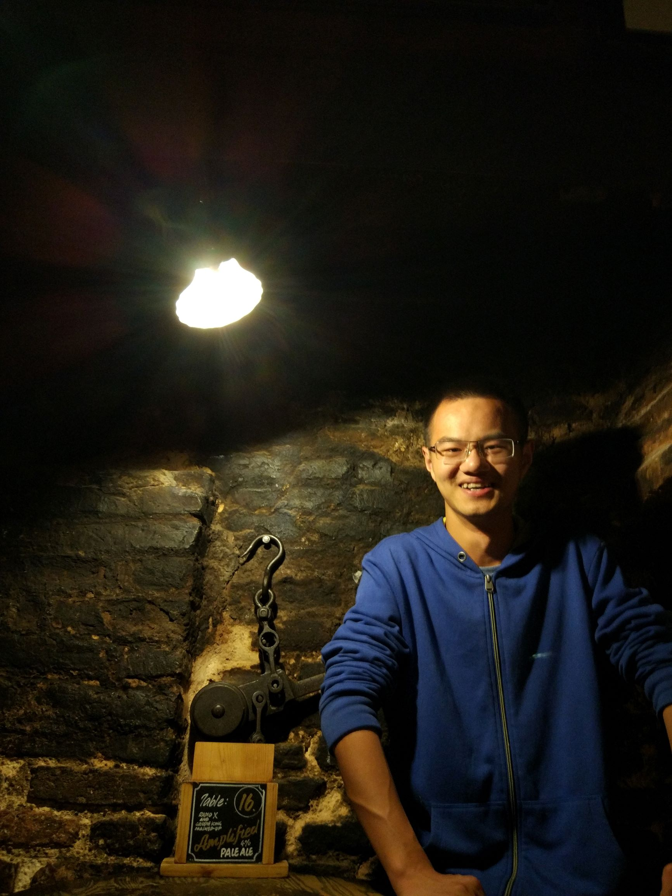

Daheng Yin
尹达恒
B.Eng Student
|
Major in IoT(Internet of Things)
Department of IoT Jiangnan University Contact: 1030616134@vip.jiangnan.edu.cn +86 188-0057-2931 Github: |

|
Self-Description
In 2016, I graduated from Mianyang Senior High School in my hometown Xiantao, Hubei Province and became a freshman in Jiangnan University in Wuxi, Jiangsu Province. After 3 years of hardworking but colorful life, I'm a Junior student and is going to graduate next year.个人特质
优点：
目前代码量30000+行，具有良好的编码能力和架构能力:)
历经两个数学竞赛和两个数学建模竞赛，具有较良好的数学抽象和建模能力:)
领导完成三人以上的项目4个，合作完成三人以上的项目多个，具有较良好的合作精神和领导能力:)
缺点
工作狂，不善社交，不善闲聊，逢人只会讨论技术不然就会冷场:(
脑子不会拐弯，容易钻牛角尖，会不自觉地在一些不太重要的技术细节上耗费时间:(
Learning Interests
I'm interested in interpretability of neural networks and human-inspired computation model. I want to do research related to the foundation of human intelligent.Education
| {{ d.时间 }} | {{ d.地点 }} | {{ d.经历 }} |
科研经历
| 时间 | 主要内容 | 指导老师 |
|---|---|---|
| {{ d.时间 }} | {{ d.课题 }} |
/
{{ i }}（{{ t }}）
|
Projects
| When | Name | Scale | Description | Related Materials | Adviser |
|---|---|---|---|---|---|
| {{ d.时间 }} | {{ d.项目名称 }} |
{{ d.参与人数 }} participants, {{ d.代码行数 }} lines code |
{{ d.项目内容 }} |
{{ i }}
（{{ t }}） /
|
Code quantity (lines)
| {{ i }} |
|---|
| {{ n }} |
Note 2：Files containing cooperators' code have been manually cleared, even if some of they also containing my own code.
Note 3：C/C++ was not counted for technical reasons.
Note 4：Counted on July 20th, 2019.
Skills
| Proficient | Competent | Beginner | |
|---|---|---|---|
| {{ i }} |
/
/ {{ t }}
|
/
/ {{ t }}
|
/
/ {{ t }}
|
Awards
| When | Award | Link to Credit |
|---|---|---|
| {{ d.时间 }} | {{ d.荣誉 }} {{ d.注释 }} | / |
Academic Competitions and Exams
| When | Competitions / Exams | Grade | Link to Credit |
|---|---|---|---|
| {{ d.时间 }} | {{ d.竞赛考试 }} | {{ d.成绩 }} | / |
Articles
No publication yet| When | Title | Authors | Related Projects | Link |
|---|---|---|---|---|
| {{ d.时间 }} | {{ d.题目 }} | {{ d.作者人数 }} | {{ d.相关项目 }} |